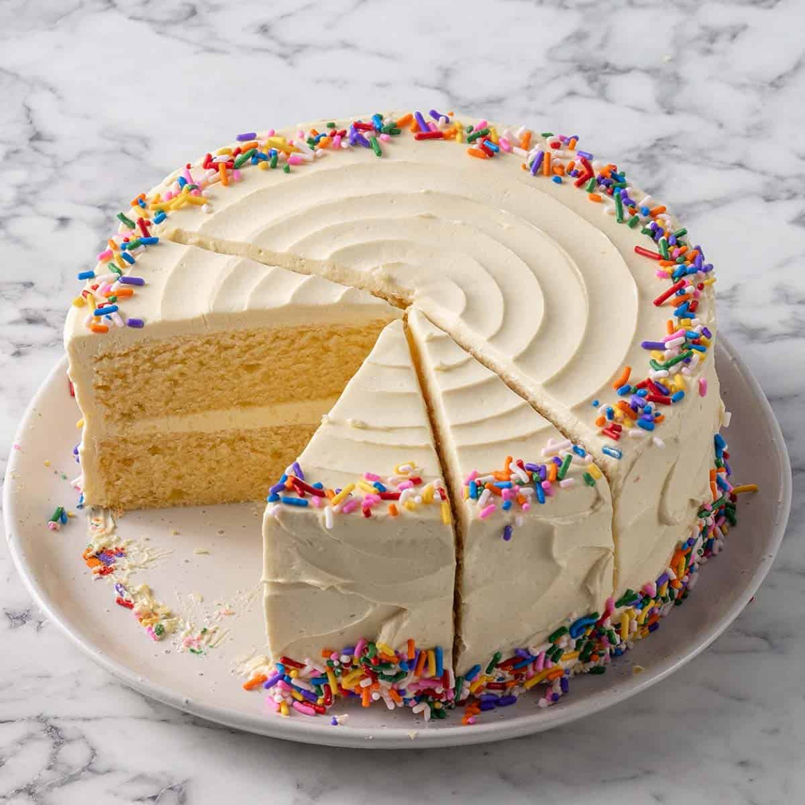

Ingredients List
- 1 cup white sugar
- ½ cup unsalted butter, softened
- 2 large eggs, room temperature
- 2 teaspoons vanilla extract
- 1½ cups all-purpose flour
- 1¾ teaspoons baking powder
- ¼ teaspoon table salt
- ½ cup whole milk, room temperature
Step-by-Step Instructions
- Gather all ingredients. Preheat the oven to 350 degrees F (175 degrees C). Grease and flour a 9-inch square cake pan.
- Beat sugar and butter together in a mixing bowl with an electric mixer until lighter in colour and fluffy, 3 to 4 minutes. Add eggs, one at a time, beating briefly after each addition, 30 seconds total. Mix in vanilla, about 15 seconds.
- Whisk flour, baking powder, and salt in a separate bowl. With mixer on low speed, add flour mixture to butter mixture in 3 batches, alternating with milk, beginning and ending with flour. Mix just until combined stopping to scrape down sides if needed, about 2 minutes.
- Spread cake batter into the prepared pan.
- Bake cake in the preheated oven until a toothpick inserted into the center comes out clean, about 30 minutes.
- Remove cake from the oven and let cool in pan on a wire rack for 10 minutes. Invert cake onto wire rack; remove pan and let cake cool completely before frosting. Enjoy!